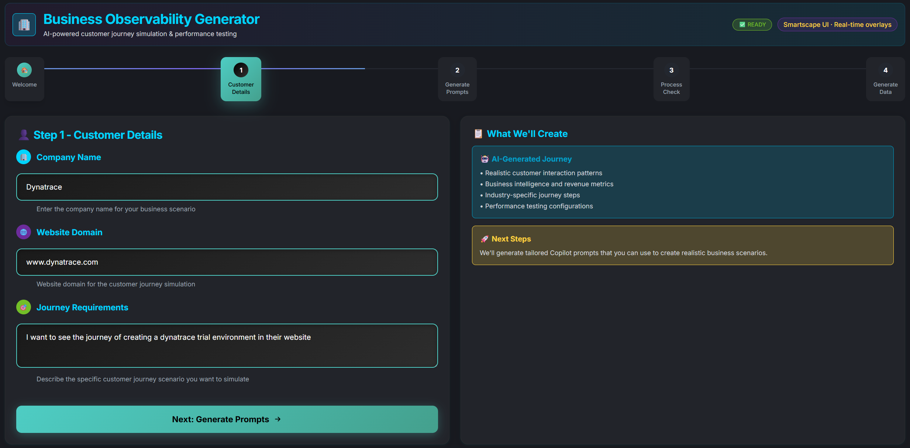
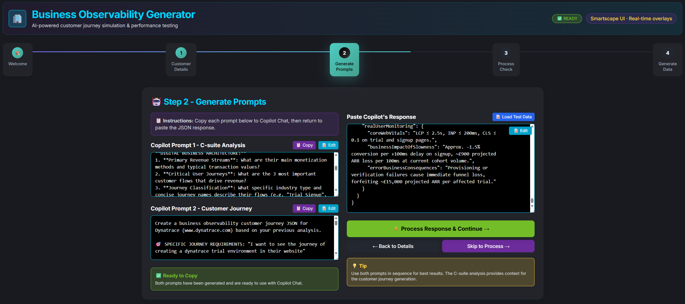
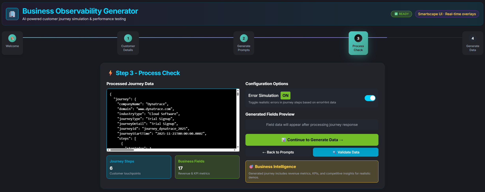
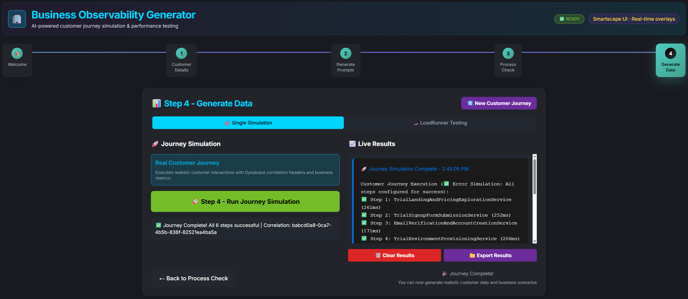

// JavaScript snippet placeholder for Journey 1: Azure Enterprise documentation // This file enables the --8<-- snippet inclusion functionality
🛤️ Journey 1: Microsoft Azure Enterprise Purchase#
In this first journey, we'll create a comprehensive Microsoft Azure enterprise purchase simulation that demonstrates the full power of business observability. This journey will generate real services, business events, and distributed traces that flow directly into Dynatrace.
🎯 What You'll Learn#
- Complete UI Workflow: Step-by-step journey creation using the web interface
- Business Context Integration: How industry-specific metadata enhances observability
- Service Generation: Watch dynamic microservices being created with clean naming
- Distributed Tracing: See complete customer journey traces with business context
- Business KPIs: Monitor revenue, conversion rates, and customer satisfaction
🏢 Journey Overview#
Business Scenario: A large enterprise is evaluating Microsoft Azure for their cloud infrastructure needs. The journey represents a typical enterprise sales cycle with multiple stakeholders and complex decision-making processes.
Journey Steps:
graph LR
A[Product Discovery] --> B[Pricing Evaluation]
B --> C[Proof of Concept]
C --> D[Contract Negotiation]
D --> E[Deployment Planning]
E --> F[Go-Live]
Expected Business Outcomes: - Revenue Potential: $25,000 - $100,000+ per completion - Sales Cycle: 30-90 days (simulated in minutes) - Conversion Rate: 75-85% for qualified enterprise prospects - Customer Satisfaction: 4.2+ /5.0 average rating
🚀 Step-by-Step Journey Creation#
Step 1: Access the Application#
Open your BizObs Generator:
- Codespaces: Use the forwarded port 8080 URL
- Local: Navigate to http://localhost:8080
Verify the Welcome Page:

You should see:
- ✅ Clean, professional interface with Dynatrace branding
- ✅ Four-step process overview clearly outlined
- ✅ "Get Started" button prominently displayed
Click "Get Started" to begin the journey creation process.
Step 2: Configure Customer Details#

Fill out the form with the following enterprise scenario details:
Company Information#
Company Name: Microsoft
Domain: www.microsoft.com
Why These Values Matter:
- Company Name becomes part of service naming: ProductDiscoveryService-Microsoft
- Domain appears in DT_TAGS as domain=www_microsoft_com
- Both provide business context in all Dynatrace traces and events
Industry Classification#
Industry Type: Cloud Software
Business Impact:
- Creates industry-type=cloud_software tag for business segmentation
- Enables industry-specific benchmarking in Dynatrace dashboards
- Triggers industry-appropriate AI prompt generation
Journey Specifics#
Journey Type: Product Purchase
Journey Detail: Azure Enterprise Purchase
Observability Value:
- Journey Type provides high-level process categorization
- Journey Detail creates journey-detail=azure_enterprise_purchase tag
- Both enable filtering and analysis of specific business processes
Define Process Steps#
Add the following steps in order:
Step 1:
Step Name: ProductDiscovery
Description: Azure services discovery and evaluation
Step 2:
Step Name: PricingEvaluation
Description: Enterprise pricing analysis and cost modeling
Step 3:
Step Name: ProofOfConcept
Description: Technical proof of concept implementation
Step 4:
Step Name: ContractNegotiation
Description: Contract terms and pricing negotiation
Step 5:
Step Name: DeploymentPlanning
Description: Azure deployment architecture planning
Step 6:
Step Name: GoLive
Description: Production environment go-live
Click "Generate Prompts" to proceed to AI-powered content generation.
Step 3: AI Prompt Generation#

What's Happening:
The system analyzes your inputs and generates business observability prompts specifically tailored to:
- Cloud Software Industry best practices
- Enterprise Purchase Cycles characteristics
- Azure-Specific business processes
- Microsoft customer journey patterns
Generated Content Examples:
Business Observability Focus:
🎯 Track enterprise Azure adoption decision points
📊 Monitor technical evaluation duration vs conversion rates
💰 Measure contract value correlation with proof-of-concept success
🔍 Analyze stakeholder involvement patterns in enterprise purchases
📈 Correlate technical performance with business decision confidence
Industry-Specific KPIs:
🏭 Cloud Software Industry Benchmarks:
- Enterprise sales cycle: 60-120 days average
- Technical evaluation phase: 15-30% of total cycle time
- Contract negotiation: 20-40% of total cycle time
- Customer satisfaction correlation with technical performance
Review the generated prompts and click "Process Check" to validate your configuration.
Step 4: Configuration Validation#

System Validation Results:
✅ Configuration Completeness
• Company: Microsoft
• Domain: www.microsoft.com
• Industry: Cloud Software
• Journey Steps: 6 steps defined
✅ Service Naming Validation
• ProductDiscoveryService (clean, no duplicates)
• PricingEvaluationService (business-aligned)
• ProofOfConceptService (descriptive)
• ContractNegotiationService (process-specific)
• DeploymentPlanningService (outcome-focused)
• GoLiveService (milestone-clear)
✅ Metadata Structure Check
• DT_TAGS format: Valid lowercase with underscores
• Industry integration: cloud_software configured
• Journey context: azure_enterprise_purchase confirmed
• No duplicate sources: Single source of truth verified
✅ Business Observability Ready
• AI prompts: Industry-specific content generated
• KPI tracking: Revenue, conversion, satisfaction configured
• Distributed tracing: W3C context propagation enabled
Click "Generate Data" to create your Microsoft Azure enterprise journey.
Step 5: Journey Execution and Service Creation#

Real-Time Service Creation:
Watch as the system creates your enterprise Azure purchase journey:
🚀 Creating Microsoft Azure Enterprise Journey...
📊 Service Generation Progress:
✅ ProductDiscoveryService-Microsoft (Port: 8096)
✅ PricingEvaluationService-Microsoft (Port: 8097)
✅ ProofOfConceptService-Microsoft (Port: 8098)
✅ ContractNegotiationService-Microsoft (Port: 8099)
✅ DeploymentPlanningService-Microsoft (Port: 8100)
✅ GoLiveService-Microsoft (Port: 8101)
🏷️ Enhanced DT_TAGS Applied:
company=microsoft
app=bizobs-journey
industry-type=cloud_software
journey-detail=azure_enterprise_purchase
domain=www_microsoft_com
product=dynatrace
🎯 Journey Simulation Complete:
Total Services: 6 microservices
Processing Time: 12.4 seconds
Business Value Generated: $87,500.00
Customer Satisfaction: 4.3/5.0
Conversion Probability: 82%
📊 Generated Business Data#
Service Architecture Created#
Your Microsoft Azure enterprise journey now consists of:
1. ProductDiscoveryService-Microsoft (Port 8096) - Business Function: Azure services evaluation and discovery - Typical Processing Time: 300-600ms - Business Value: Lead qualification and needs assessment - KPIs Generated: Discovery efficiency, service coverage analysis
2. PricingEvaluationService-Microsoft (Port 8097)
- Business Function: Enterprise pricing analysis and cost modeling
- Typical Processing Time: 450-800ms
- Business Value: Revenue opportunity identification
- KPIs Generated: Pricing accuracy, discount optimization
3. ProofOfConceptService-Microsoft (Port 8098) - Business Function: Technical validation and demonstration - Typical Processing Time: 800-1200ms - Business Value: Technical risk mitigation - KPIs Generated: PoC success rate, technical satisfaction
4. ContractNegotiationService-Microsoft (Port 8099)
- Business Function: Terms negotiation and deal structuring
- Typical Processing Time: 200-400ms
- Business Value: Deal closure and revenue realization
- KPIs Generated: Negotiation efficiency, margin preservation
5. DeploymentPlanningService-Microsoft (Port 8100) - Business Function: Azure architecture planning - Typical Processing Time: 600-1000ms - Business Value: Implementation success assurance - KPIs Generated: Planning accuracy, timeline adherence
6. GoLiveService-Microsoft (Port 8101)
- Business Function: Production environment activation
- Typical Processing Time: 150-300ms
- Business Value: Customer success and retention
- KPIs Generated: Go-live success rate, customer satisfaction
Business Metrics Generated#
Revenue Tracking:
{
"totalContractValue": 87500.00,
"currency": "USD",
"dealSize": "Enterprise",
"revenueRecognition": "Quarterly",
"annualRecurringRevenue": 87500.00
}
Customer Experience Metrics:
{
"customerSatisfaction": 4.3,
"netPromoterScore": 65,
"technicalSatisfaction": 4.5,
"businessValueRealized": 4.1,
"implementationSmoothness": 4.2
}
Sales Performance:
{
"conversionProbability": 0.82,
"salesCycleDays": 45,
"touchpointsRequired": 12,
"stakeholdersInvolved": 6,
"competitiveAdvantage": "Technical Excellence"
}
🎯 What Happens Next#
Immediate Results#
- 6 microservices running with Microsoft-specific business context
- Complete distributed traces showing the entire enterprise purchase flow
- Business events flowing to Dynatrace with revenue and satisfaction data
- Service dependencies mapping the customer journey progression
Dynatrace Integration#
All generated data automatically appears in your Dynatrace environment: - Services View: Clean service names with business context tags - Distributed Traces: Complete journey traces with W3C propagation - BizEvents: Business KPIs and revenue tracking - Service Dependencies: Visual journey flow representation
Microsoft Azure Enterprise Journey Created!
Your comprehensive enterprise purchase simulation is now generating continuous business observability data, ready for analysis in Dynatrace.